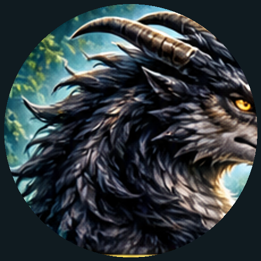

AI Cinematic Story & Prompt Generator
Prompt tersimpan di perangkat ini dan dapat dibuka tanpa internet.
Ragantara adalah makhluk fantasi perpaduan naga dan serigala. Memiliki kepala menyerupai naga dengan moncong tegas, tepat dua tanduk panjang yang melengkung ke belakang.
Tubuhnya atletis dan berotot dengan empat kaki kuat. Bulu tebal berwarna hitam arang tumbuh di kepala, leher, bahu, dan sepanjang punggung.
Matanya tajam, cerdas, dan bijaksana. Ekornya panjang dan berbulu dengan ujung melengkung membentuk spiral.
Ragantara memiliki aura misterius, gagah, dan merupakan penjaga hutan ajaib.